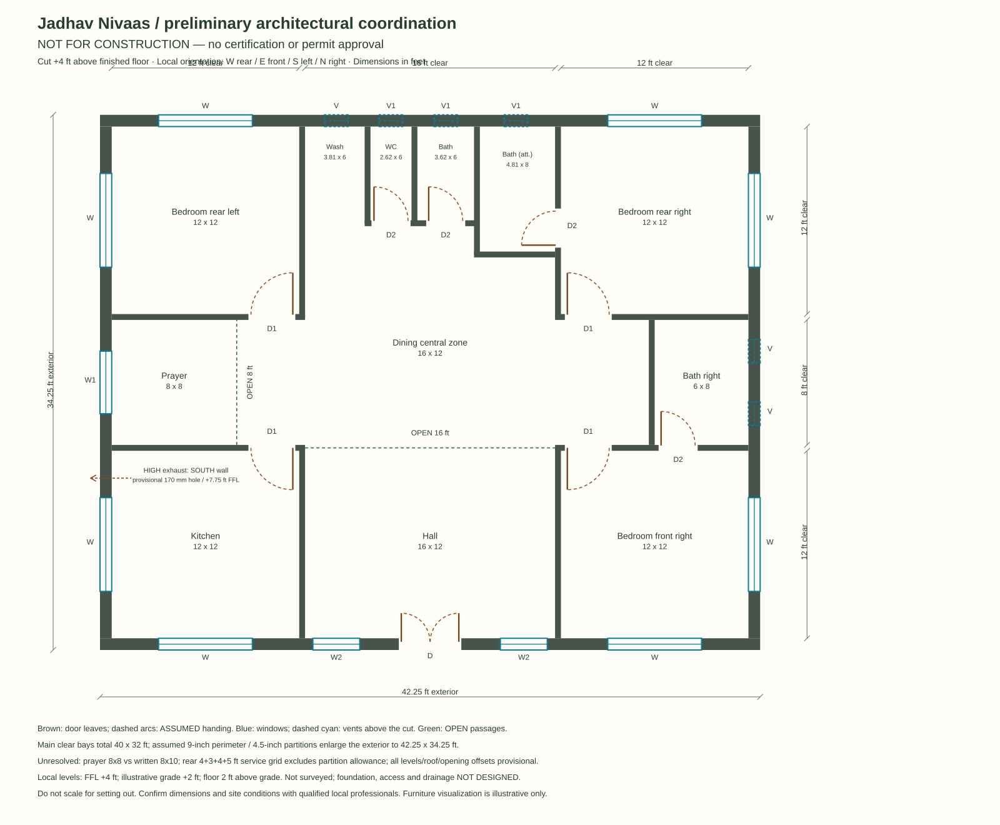

Confirmed scope: ground floor only; the raised roof element is a ventilation/light monitor, not another storey. No existing site/engineering documents have been supplied. Site jurisdiction/location has been deferred.
Room/grid extents are not external dimensions. Main clear bays total 40 x 32 ft; assumed walls give 42.25 x 34.25 ft exterior. Units: feet. Exact setting-out dimensions are provisional.
Local model datum: FFL +4 ft; user-directed illustrative grade +2 ft; floor 2 ft above grade. These are not surveyed or sea-level elevations. Native plinth/slab geometry is retained; no foundations or engineered access are designed.
By user direction, the hall/dining connection is open across the full 16-ft central bay, with both short returns and the upper wall/lintel removed. Flanking vertical partitions and neighboring D1 hosts remain. This conceptual revision is not demolition advice; structural support/load paths remain unverified.

Open vector drawing · Editable master · IFC · Furnished visualization
| Mark | Width (ft) | Height (ft) | Count | Sill above FFL (ft) |
|---|---|---|---|---|
| D | 4 | 7 | 1 | 0 |
| D1 | 3 | 7 | 4 | 0 |
| D2 | 2.5 | 7 | 4 | 0 |
| W | 6 | 4 | 8 | 3 |
| W1 | 4 | 4 | 1 | 3 |
| W2 | 3 | 4 | 2 | 3 |
| V | 1.5 | 2 | 3 | 7 |
| V1 | 1.5 | 2 | 3 | 7 |
Download CSV. Sizes describe model opening extents, not certified clear passage or manufactured frame dimensions. Door handing is assumed for visualization. Window positions and sills require confirmation. Monitor vents are additional unscheduled conceptual openings.
User-directed vent revision: all six existing bathroom/toilet ventilation openings are now 1 ft 6 in wide by 2 ft high. V/V1 marks and counts are retained for traceability; the three former V openings were reduced from 2 ft wide by 2 ft 6 in high. Locations, ordinary W/W1/W2 windows and the separate monitor assemblies are unchanged. Ventilation adequacy has not been assessed.
The retained hipped roof and central ventilation/light monitor now have a Maharashtrian wada / Konkan-inspired timber-louver band with a recessed illustrative metal grille, rather than a wide-open band. These elements are present in the native FreeCAD model, IFC and exported visualization. They are not a burglar-proofing claim or a construction detail. References, interpretation and unresolved specifications.
| Discipline / input | Outstanding before construction issue |
|---|---|
| Site / approvals | Location and jurisdiction; measured boundary/topographic survey; levels, setbacks, title/approval requirements and locally applicable regulations. |
| Ground / structure | Geotechnical investigation; qualified structural design of foundations, supports, slabs, walls, roof/monitor and connections for actual site actions. No soil capacity, member sizes, reinforcement or load paths are certified here. |
| Architecture / safety | Resolve conflicting dimensions, wet-room usability, room access, egress, access stairs/ramp/guards, weathering, ventilation, energy/fire/accessibility requirements as applicable locally. |
| MEP | Water, waste/vent, stormwater falls/discharge, electrical circuits/protection, lighting and any mechanical ventilation; coordinate fixtures and service routes with structure. No sewer or concealed plumbing routes are invented. |
| Issue control | Coordinated signed drawings/specifications, material selections, approved setting-out dimensions and qualified local review/approvals. IFC geometry integrity is not engineering approval. |
Furniture and fixture assets are authored illustrative geometry, not specified products. Their room fit and assumed door-sweep checks are not a code, accessibility, egress or maintenance-clearance assessment. Native FreeCAD/IFC remains the architectural geometry master.